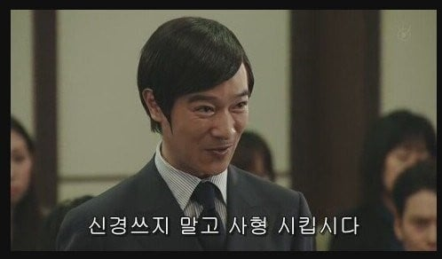
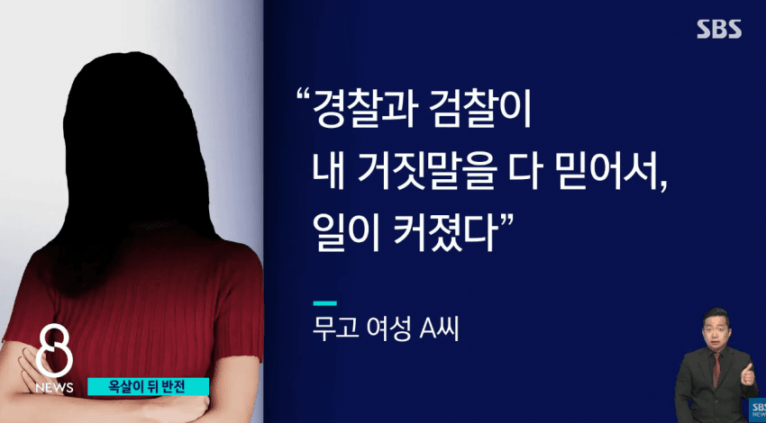
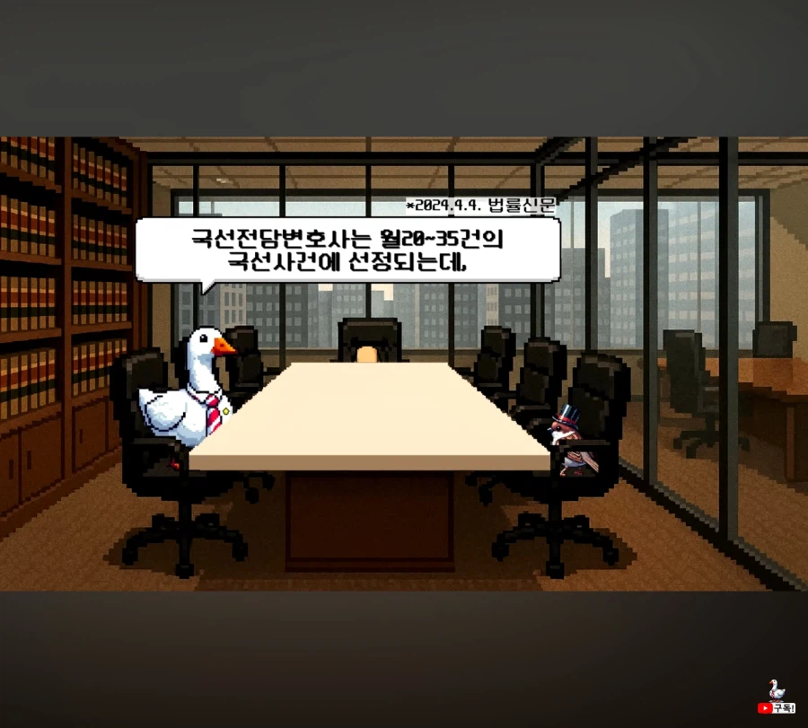
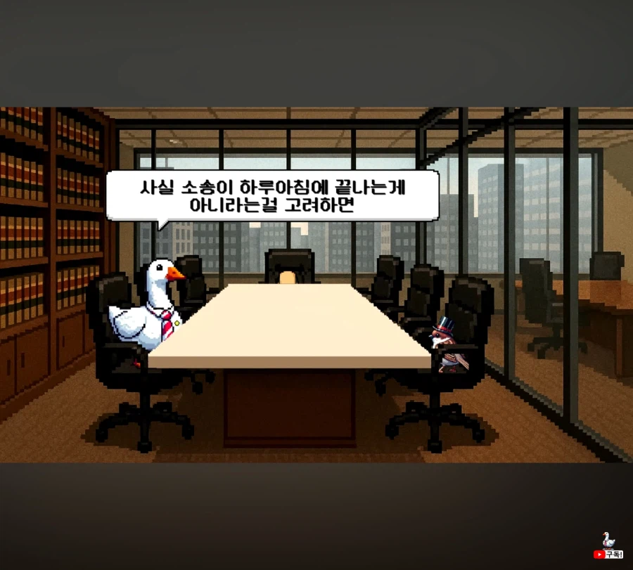
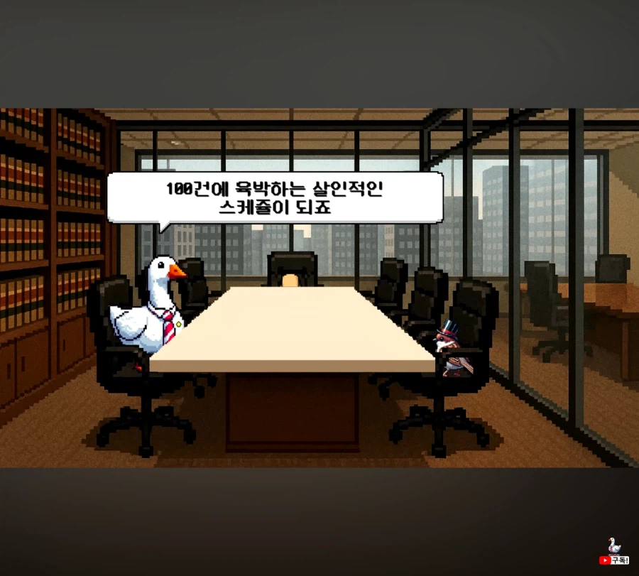
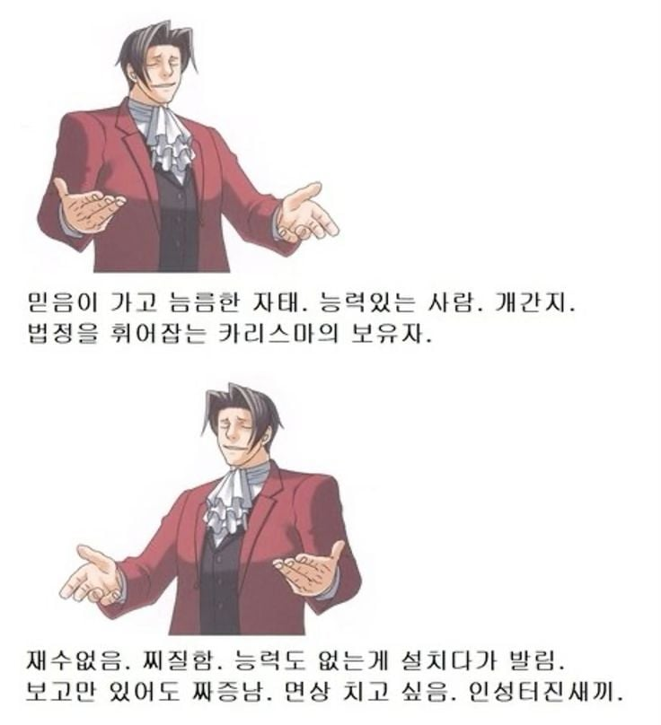
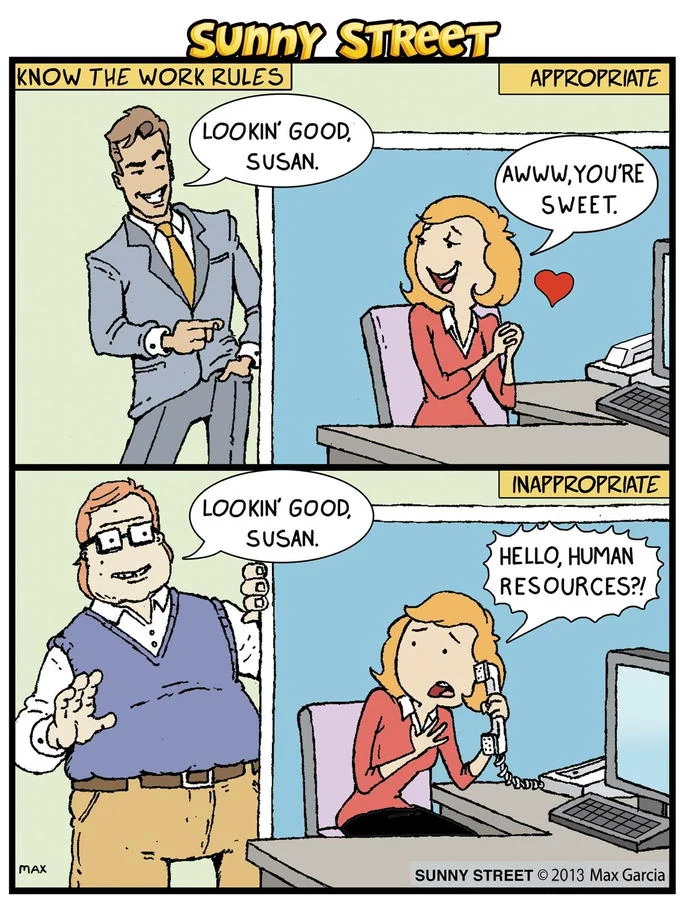
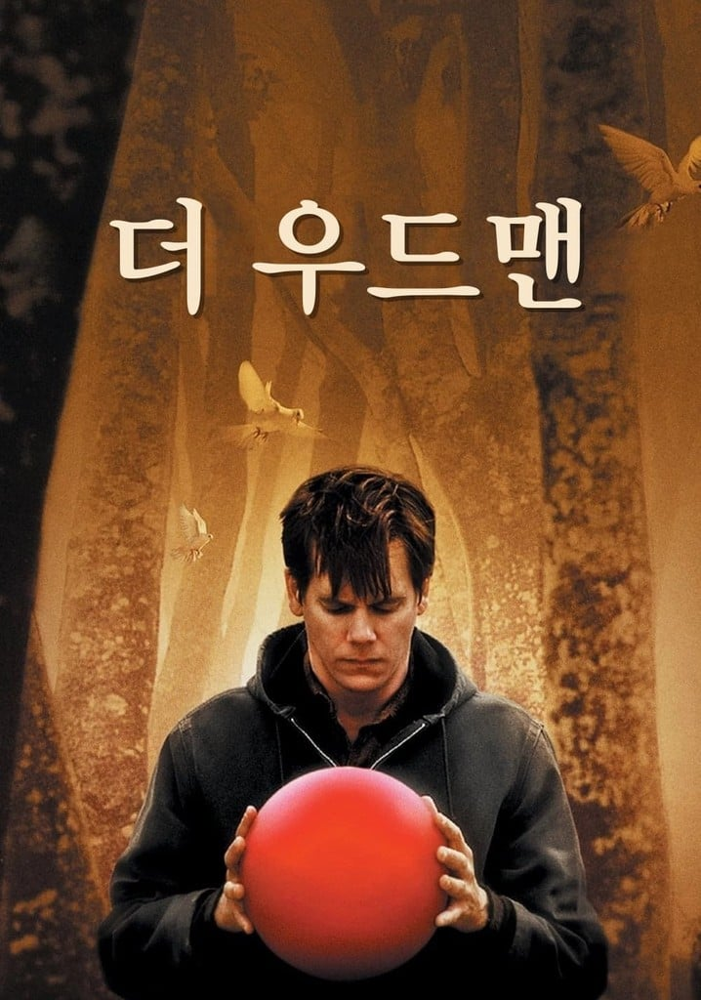
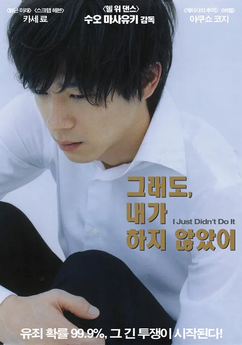

개드립이나 다른 커뮤니티를 보다 보면 이런 반응을 종종 보게 된다.
“흉악범을 변호하는 변호사는 돈에 미친 악마고, 검사는 정의의 사도 아니냐?”
그런데 형사재판은 ‘악당 편을 드는 사람’과 ‘정의를 구현하는 사람’의 대결이 아니다. 국가가 한 개인을 범죄자로 확정하고 처벌하기 전에, 정말 혐의가 입증됐는지 정해진 절차에 따라 검증하는 과정이다.
먼저 대전제부터 정리해야 한다.
인류는 오랫동안 원님재판, 유죄추정, 신분에 따른 차별, 고문을 통한 자백, 인민재판을 겪었다. 사람들이 범죄자라고 생각하는 사람을 붙잡아 린치하고 죽인 뒤 ‘정의 구현’을 외치던 시대도 있었다.
그 시행착오 끝에 만든 원칙이 무죄추정, 변호인의 조력을 받을 권리, 적법절차다. 피고인이 자기 무죄를 증명하는 게 아니라, 처벌하려는 국가가 범죄를 증명해야 한다는 것이다.
이게 싫다면 차라리 헌법과 법률을 이렇게 바꾸자고 주장해야 한다.
-
중범죄 혐의를 받으면 재판 없이 처벌한다.
-
피고인이 직접 자신의 무죄를 증명해야 한다.
-
고문으로 얻은 자백도 증거로 인정한다.
-
여론이 유죄라고 판단하면 그대로 처벌한다.

당연히 이렇게 하자는 사람은 거의 없을 것이다. 문제는 남의 사건을 볼 때는 자신도 모르게 이런 방식의 사법제도를 원한다는 점이다.
1. 변호사는 범죄를 옹호하는 사람이 아니다
변호사의 역할은 “범죄를 잘했다”고 주장하는 것이 아니다.
혐의가 실제로 입증됐는지, 수사 과정에서 위법은 없었는지, 증거는 믿을 만한지, 피고인이 하지 않은 일까지 뒤집어쓰지는 않았는지, 잘못보다 지나치게 무거운 처벌을 받지는 않는지를 따지는 사람이다.
누군가는 변호사를 ‘검투사’나 ‘챔피언’에 비유한다. 복잡한 법과 절차 속에서 당사자를 대신해 싸우는 사람이라는 뜻이다. 일종의 용병이라고 볼 수도 있다. 그렇다면 사건을 맡은 이상 의뢰인을 위해 최선을 다하는 게 당연하다. 증거를 조작하거나 피해자를 협박하는 등의 불법을 저지르지 않는 한 말이다.
변호사가 열심히 변론했다는 사실과 피고인의 범죄를 도덕적으로 찬양한다는 것은 전혀 다른 이야기다.
2. 경찰과 검찰이 언제나 옳다고 믿을 수 있나?
경찰과 검찰도 결국 사람이 운영하는 조직이다. 실수할 수도 있고, 선입견에 빠질 수도 있으며, 무리한 수사를 할 수도 있다.
화성동탄경찰서 성범죄 누명 사건 같은 사례를 보면 무죄추정과 변호인의 조력이 왜 필요한지 알 수 있다. 처음부터 모두가 “저 사람은 범죄자가 분명하다”고 단정하고, 변호사들마저 “괜히 성범죄 사건을 맡았다가 훗날 커리어나 공직 진출에 불이익을 받는 것 아니냐”며 사건을 피한다면, 억울한 사람은 누구의 도움을 받아야 하나?

물론 모든 피고인이 누명을 쓴 것은 아니다. 실제 범죄자도 많다. 하지만 유죄인 사람과 억울한 사람은 재판하기 전부터 이마에 표시가 붙어 있는 게 아니다.
그래서 모든 피고인에게 방어할 기회를 주고, 국가가 증거로 유죄를 입증하도록 하는 것이다. 진범을 제대로 처벌하기 위해서라도 필요한 절차다.
변호사를 충분히 구하지 못한 사람은 과중한 사건을 맡고 있는 국선변호인에게 의존해야 하는 경우도 많다. 국선변호인이 무능해서가 아니라, 한 사람이 감당해야 하는 사건이 지나치게 많으면 각 사건에 쓸 수 있는 시간과 자원이 줄어들 수밖에 없다.



그 결과 끝까지 다퉜다면 무죄 가능성이 있는 사건에서도, 당사자가 불안과 부담 때문에 혐의를 인정하거나 불리한 선택을 할 수 있다.
이 문제는 미국에서도 심한데, 분명 무죄인 사람이라도 그냥 빨리 대충 Guilty Plea해서 끝내려는 경우도 많다.
그래서 형사사건을 국선만이 아닌 변호사도 사건을 진행하는 것이 바람직하다.
그러려면, 우리 사회는 형사사건에 대한 사회적 스티그마에 대해서 좀 합리적으로 접근해야한다.
3. 검사도 ‘정의의 사도’라는 캐릭터는 아니다
검사는 범죄를 수사하고 피고인을 기소하며 법정에서 공소를 유지하는 국가기관이다. 단순히 유죄판결만 받아내면 끝나는 존재는 아니고 객관성과 공익을 지켜야 할 의무도 있다.
그러나 그렇다고 검사를 정의 그 자체로 생각해서는 안 된다.
형사재판에서는 국가라는 거대한 권력이 한 개인의 자유를 빼앗으려 한다. 체포하고, 압수수색하고, 구속하고, 처벌할 수 있는 힘이다. 그만큼 엄격한 조건과 절차가 필요하다.
검사가 혐의와 증거를 제시하면 변호인은 그것을 검증하고 반박한다. 법원은 양쪽의 주장과 증거를 살펴 판단한다. 이 구조에서 변호인을 ‘범죄자의 편’이라는 이유로 악마화하면 균형 자체가 무너진다.

4. 적법절차는 착한 사람에게만 주는 상이 아니다
적법절차가 중요한 이유는 우리도 언제든 국가권력의 대상이 될 수 있기 때문이다.
길을 가다가 억울하게 몰카범으로 지목될 수도 있다. 휴대전화를 압수당한 채 수사를 받을 수도 있다. 주변에서 흉흉한 사건이 발생했다는 이유로 30대 오타쿠 백수 개붕이가 의심받을 수도 있다.

실제로 잘못을 저질렀더라도 자신이 저지르지 않은 범죄까지 뒤집어쓰거나, 죄보다 지나치게 가혹한 처벌을 받아서는 안 된다.
그때 수사기관에 “저는 안 했습니다”라고 말하는 것만으로 충분할까?
법을 모르고, 어떤 자료를 제출해야 하는지 모르고, 수사기관의 질문이 어떤 의미인지도 모르는 개인에게 절차상 권리가 있다는 말은 공허할 수 있다. 그 권리를 현실에서 행사하도록 돕는 사람이 변호사다.
뉴스나 온라인에서 접하는 사건을 보며 분노할 수 있다. 판결이 상식과 맞지 않는다고 비판할 수도 있고, 법을 개정하자고 주장할 수도 있다.
하지만 그 분노가 무죄추정, 변호인의 조력을 받을 권리, 적법절차 자체를 부정하는 방향으로 가서는 안 된다. 그것들은 범죄자를 위한 특혜가 아니라 국가권력 앞에 선 모든 시민을 위한 안전장치이기 때문이다.
화가 날 때마다 영화 그래도 내가 하지 않았어랑 더 우드맨을 한 번 보자.


우리가 없애자고 외치는 그 절차가, 어느 날 우리 자신을 지켜주는 마지막 장치일 수도 있다.
동탄경찰서 욕하는새끼들이 왜 범죄자를 변호하지 이러는거 보면 그저 코메디가 따로없긴함 ㅋㅋ